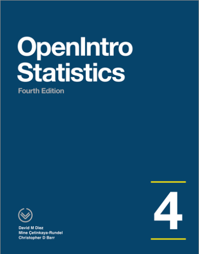

S1Z Lab 1
Welcome to S1Z Lab 1

In this lab, we will investigate the ways in which the statistics from a random sample can serve to make inference and test hypotheses about the true parameter in the larger population. We will explore here inference methods for numerical data. Before we begin however, let's revisit the difference between categorical and numerical data.
Categorical Data = Data where an observation can belong to one of a certain fixed number of categories or groups. For example, someone's bloodtype. Your bloodtype can be one of A, B, AB or O.
Numerical Data = Data in the form of numbers; rather than being defined as a member of some group or category. It also must make sense for calculations to be performed on those numbers, such as adding them or taking averages of them. This is important, for example a phone number is a number but it doesn't make sense to add phone numbers together. An example of numerical data is your height. It's measured with a number you can perform calculations directly on such as averages. Another example would be a count of the number of patients seen at a GP Surgery in a day.
The material within this lab has been based on OpenIntro Chapter 7. Feel free to refer back to the materials to help you within this lab.
tidyverse packages
These labs use packages from the tidyverse suite of packages, which has been called "the most powerful collection of R Packages for data science". You don't need to go into much depth for these labs, but if you were interested, this intro is a good place to start.
Aside: A package in R is just a collection of functions, data, documentation and compiled code that people have created to easily access and share with others.
To run the code that appears in the consoles in this lab in your own version of RStudio, start by installing and loading these packages.
install.packages("tidyverse")
install.packages("infer")
install.packages("openintro")
library(tidyverse)
library(infer)
library(openintro)Credit where credit is due

The labs in S1Y/Z are a derivative of the labs on the OpenIntro Statistics website by the OpenIntro team used under a Creative Commons Attribution-ShareAlike 4.0 International License. Some of the artwork used is by @allison_horst